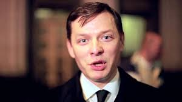

Кандидат у Президенти України Олег Ляшко

підтримка : 5.48
Оле́г Вале́рійович Ляшко́ (нар. 3 грудня 1972, Чернігів, Українська РСР, СРСР) —
український політик, народний депутат України, журналіст, телеведучий.
Лідер Радикальної партії Олега Ляшка.
2006–2007 — народний депутат України V скликання від Блоку Юлії Тимошенко.
Голова підкомітету з питань організації роботи Верховної Ради Комітету ВР з
питань Регламенту, депутатської етики та забезпечення діяльності ВР.